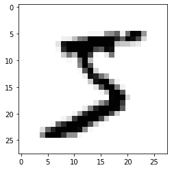
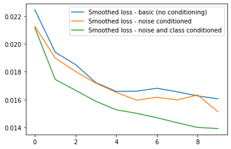
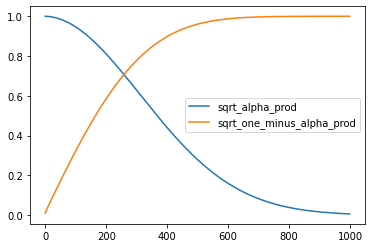

device = torch.device("cuda" if torch.cuda.is_available() else "cpu")
print(f'Using device: {device}')Using device: cudaDiffusion models are a little different to the other types of generative models you may have encountered. During training, input images (or any other kind of data) are corrupted, and the model attempts to ‘undo’ this corruption. Once trained, we can begin from a random set of inputs that resembles data that has been so completely degraded as to be unrecognizeable and then gradually ‘uncorrupt’ this, typically over a large number of steps.
TODO diagram
In most (but not all!) current approaches, this ‘corruption’ takes the place of adding noise, hence ‘denoising diffusion models’. The exact method of adding noise and the details of how the problem is formulated vary across the literature, which can lead to confusion.
The goal of this lesson is to introduce the key concepts without worrying too much about specific implementations. The plan:
device = torch.device("cuda" if torch.cuda.is_available() else "cpu")
print(f'Using device: {device}')Using device: cuda
[video: intro idea]
Load the dataset (replace MNIST with FashionMNIST for a variant):
#!output: false
mnist_dataset = torchvision.datasets.MNIST(root="mnist/", train=True, download=True, transform=torchvision.transforms.ToTensor())Downloading http://yann.lecun.com/exdb/mnist/train-images-idx3-ubyte.gz
Downloading http://yann.lecun.com/exdb/mnist/train-images-idx3-ubyte.gz to mnist/MNIST/raw/train-images-idx3-ubyte.gzExtracting mnist/MNIST/raw/train-images-idx3-ubyte.gz to mnist/MNIST/raw
Downloading http://yann.lecun.com/exdb/mnist/train-labels-idx1-ubyte.gz
Downloading http://yann.lecun.com/exdb/mnist/train-labels-idx1-ubyte.gz to mnist/MNIST/raw/train-labels-idx1-ubyte.gzExtracting mnist/MNIST/raw/train-labels-idx1-ubyte.gz to mnist/MNIST/raw
Downloading http://yann.lecun.com/exdb/mnist/t10k-images-idx3-ubyte.gz
Downloading http://yann.lecun.com/exdb/mnist/t10k-images-idx3-ubyte.gz to mnist/MNIST/raw/t10k-images-idx3-ubyte.gzExtracting mnist/MNIST/raw/t10k-images-idx3-ubyte.gz to mnist/MNIST/raw
Downloading http://yann.lecun.com/exdb/mnist/t10k-labels-idx1-ubyte.gz
Downloading http://yann.lecun.com/exdb/mnist/t10k-labels-idx1-ubyte.gz to mnist/MNIST/raw/t10k-labels-idx1-ubyte.gzExtracting mnist/MNIST/raw/t10k-labels-idx1-ubyte.gz to mnist/MNIST/raw
Viewing the first example image:
# View an example
im, label = mnist_dataset[0]
print('Image shape:', im.shape)
print('Image min and max:', im.min(), im.max())
print('label:', label)
plt.imshow(im[0], cmap='Greys');Image shape: torch.Size([1, 28, 28])
Image min and max: tensor(0.) tensor(1.)
label: 5
# See how we can make a dataloader to serve the data in batches for training
train_dataloader = DataLoader(mnist_dataset, batch_size=8, shuffle=True)
x, y = next(iter(train_dataloader))
x.shape, y(torch.Size([8, 1, 28, 28]), tensor([3, 7, 0, 2, 5, 3, 9, 9]))Pretend you haven’t read any diffusion model papers, but you know the process involves adding noise. How would you do it?
We probably want an easy way to control the amount of corruption. So what if we take in a parameter for the amount of noise to add, and then we do:
noise = torch.rand_like(x)
noisy_x = (1-amount)*x + amount*noise
If amount = 0, we get back the input without any changes. If amount gets up to 1, we get back noise with no trace of the input x. By mixing the input with noise this way, we keep the output in the same range (0 to 1).
We can implement this fairly easily (just watch the shapes so you don’t get burnt by broadcasting rules):
def corrupt(x, amount):
"""Corrupt the input `x` by mixing it with noise according to `amount`"""
noise = torch.rand_like(x)
amount = amount.view(-1, 1, 1, 1) # Sort shape so broadcasting works
return x*(1-amount) + noise*amountAnd looking at the results visually to see that it works as expected:
With this in place, let’s move on to the next piece of this process - the model.
Sticking with our goal of simplicity, we’ll specify the model here as a neural network that produces an output the same shape as it’s input. I’ve made three variants you can try out:
class BasicConvNet(nn.Module):
"""A stack of conv layers with padding to keep the output the same size as
the input. Hidden channel numbers fixed at: [16, 32, 64, 64, 16].
Args: in_channels, out_channels,kernel_size=5."""
def __init__(self, in_channels, out_channels, kernel_size=5):
super().__init__()
padding = kernel_size // 2 # So we keep output size the same
self.net = nn.Sequential(
nn.Conv2d(in_channels, 16, kernel_size, padding=padding),
nn.ReLU(),
nn.Conv2d(16, 32, kernel_size, padding=padding),
nn.ReLU(),
nn.Conv2d(32, 64, kernel_size, padding=padding),
nn.ReLU(),
nn.Conv2d(64, 64, kernel_size, padding=padding),
nn.ReLU(),
nn.Conv2d(64, 64, kernel_size, padding=padding),
nn.ReLU(),
nn.Conv2d(64, 16, kernel_size, padding=padding),
nn.ReLU(),
nn.Conv2d(16, out_channels, kernel_size, padding=padding),
)
def forward(self, x):
return self.net(x)from torch import nn
from functools import partial
from einops.layers.torch import Rearrange, Reduce
class PreNormResidual(nn.Module):
def __init__(self, dim, fn):
super().__init__()
self.fn = fn
self.norm = nn.LayerNorm(dim)
def forward(self, x):
return self.fn(self.norm(x)) + x
def FeedForward(dim, expansion_factor = 4, dropout = 0., dense = nn.Linear):
inner_dim = int(dim * expansion_factor)
return nn.Sequential(
dense(dim, inner_dim),
nn.GELU(),
nn.Dropout(dropout),
dense(inner_dim, dim),
nn.Dropout(dropout)
)
def MLPMixer(*, image_size, channels, patch_size, dim, depth, expansion_factor = 4, expansion_factor_token = 0.5, dropout = 0.):
"""A minimal MLP Mixer stolen from lucidrain's implementation."""
# Get image width and height (same if image_size isn't a tuple):
pair = lambda x: x if isinstance(x, tuple) else (x, x)
image_h, image_w = pair(image_size)
# Check they divide neatly by patch_size
assert (image_h % patch_size) == 0 and (image_w % patch_size) == 0, 'image must be divisible by patch size'
num_patches = (image_h // patch_size) * (image_w // patch_size)
# Prep the two layers
chan_first, chan_last = partial(nn.Conv1d, kernel_size = 1), nn.Linear
# Return the model (a stack of [FeedForward(chan_first), FeedForward(chan_last)] pairs
# with layer norm on the inputs and a skip connection thanks to PreNormResidual)
return nn.Sequential(
Rearrange('b c (h p1) (w p2) -> b (h w) (p1 p2 c)', p1 = patch_size, p2 = patch_size),
nn.Linear((patch_size ** 2) * channels, dim),
*[nn.Sequential(
PreNormResidual(dim, FeedForward(num_patches, expansion_factor, dropout, chan_first)),
PreNormResidual(dim, FeedForward(dim, expansion_factor_token, dropout, chan_last))
) for _ in range(depth)],
Rearrange('b (h w) (p1 p2 c) -> b c (h p1) (w p2)', h = int(image_h/patch_size), w = int(image_w/patch_size), p1 = patch_size, p2 = patch_size),
nn.Conv2d(dim//(patch_size**2), channels, kernel_size=1) # Back to right number of channels
)class BasicUNet(nn.Module):
"""A minimal UNet implementation."""
def __init__(self, in_channels, out_channels):
super().__init__()
self.down_layers = torch.nn.ModuleList([
nn.Conv2d(in_channels, 32, kernel_size=5, padding=2),
nn.Conv2d(32, 64, kernel_size=5, padding=2),
nn.Conv2d(64, 64, kernel_size=5, padding=2),
])
self.up_layers = torch.nn.ModuleList([
nn.Conv2d(64, 64, kernel_size=5, padding=2),
nn.Conv2d(64, 32, kernel_size=5, padding=2),
nn.Conv2d(32, out_channels, kernel_size=5, padding=2),
])
self.act = nn.SiLU()
self.downscale = nn.MaxPool2d(2)
self.upscale = nn.Upsample(scale_factor=2)
def forward(self, x):
h = []
for i, l in enumerate(self.down_layers):
x = self.act(l(x))
h.append(x)
if i < 2: x = self.downscale(x)
for i, l in enumerate(self.up_layers):
if i > 0: x = self.upscale(x)
x += h.pop()
x = self.act(l(x))
return xWe’ll stick with the basic UNet for this demo but you can swap in the others if you’d like.
unet = BasicUNet(1, 2)
unet(torch.rand(8, 1, 28, 28)).shapetorch.Size([8, 2, 28, 28])You can see how many parameters this has:
sum([p.numel() for p in unet.parameters()]) # Try halving the number of channels in each layer309858We can create one and feed our demo batch of data through to check that it works and that the output shape is the same as the input as we expect:
# Create the network (for single channel input & output images)
net = BasicUNet(1, 1)
# Feed some data through:
x.shape, net(x).shape(torch.Size([8, 1, 28, 28]), torch.Size([8, 1, 28, 28]))So what should the model do, exactly? Again, there are various takes on this but for this demo let’s pick a simple framing: given a corrupted input noisy_x the model should output its best guess for what the original x looks like. We will compare this to the actual value via the mean squared error
We can now have a go at training the network. - Get a batch of data - Corrupt it by random amounts - Feed it through the model - Compare the model predictions with the clean images to calculate our loss - Update the model’s parameters accordingly.
Feel free to experiment with all of the parameters here - for this example I chose most fairly arbitrarily!
# Dataloader (you can mess with batch size)
train_dataloader = DataLoader(mnist_dataset, batch_size=64, shuffle=True)
# How many runs through the data should we do?
n_epochs = 10
# Create the network (feel free to explore)
# net = BasicConvNet(1, 1)
# net = MLPMixer(image_size=28, channels=1, patch_size=4, dim=64, depth=4)
net = BasicUNet(1, 1)
net.to(device) # We want to train on the GPU if that is available
# Our loss finction
loss_fn = nn.MSELoss()
# The optimizer - explore different learning rates or try
# a different optimizer instead
opt = torch.optim.Adam(net.parameters(), lr=3e-4)
# Keeping a record of the losses for later viewing
losses = []
# And a record of smoothed loss values after each epoch
smoothed_losses_basic = []
# The training loop
for epoch in range(n_epochs):
for x, y in train_dataloader:
# Get some data and prepare the corrupted version
x = x.to(device) # Data on the GPU
noise_amount = torch.rand(x.shape[0]).to(device) # Pick random noise amounts
noisy_x = corrupt(x, noise_amount) # Create our noisy x
# Get the model prediction
pred = net(noisy_x)
# Calculate the loss
loss = loss_fn(pred, x) # How close is the output to the true 'clean' x?
# Backprop and update the params:
opt.zero_grad()
loss.backward()
opt.step()
# Store the loss for later
losses.append(loss.item())
# break
# Print our the average of the last 100 loss values to get an idea of progress:
avg_loss = sum(losses[-100:])/100
smoothed_losses_basic.append(avg_loss)
print(f'Finished epoch {epoch}. Average of the last 100 loss values: {avg_loss:05f}')
# View the loss curve
plt.plot(losses)Finished epoch 0. Average of the last 100 loss values: 0.022459
Finished epoch 1. Average of the last 100 loss values: 0.019406
Finished epoch 2. Average of the last 100 loss values: 0.018515
Finished epoch 3. Average of the last 100 loss values: 0.017215
Finished epoch 4. Average of the last 100 loss values: 0.016586
Finished epoch 5. Average of the last 100 loss values: 0.016600
Finished epoch 6. Average of the last 100 loss values: 0.016814
Finished epoch 7. Average of the last 100 loss values: 0.016558
Finished epoch 8. Average of the last 100 loss values: 0.016264
Finished epoch 9. Average of the last 100 loss values: 0.016051We can try to see what the model predictions look like by grabbing a batch of data, corrupting it my different amounts and then seeing the models predictions:
# Fetch some data
x, y = next(iter(train_dataloader))
x = x[:8] # Only using the first 8 for easy plotting
# Corrupt with a range of amounts
amount = torch.linspace(0, 1, x.shape[0]) # Left to right -> more corruption
noised_x = corrupt(x, amount)
# Get the model predictions
with torch.no_grad():
preds = net(noised_x.to(device)).detach().cpu()
# Plot
fig, axs = plt.subplots(3, 1, figsize=(12, 7))
axs[0].set_title('Input data')
axs[0].imshow(torchvision.utils.make_grid(x)[0], cmap='Greys')
axs[1].set_title('Corrupted data')
axs[1].imshow(torchvision.utils.make_grid(noised_x)[0], cmap='Greys')
axs[2].set_title('Network Predictions')
axs[2].imshow(torchvision.utils.make_grid(preds)[0], cmap='Greys')<matplotlib.image.AxesImage>You can see that for the lower amounts the predictions are pretty good! But as the level gets very high there is less for the model to work with, and by the time we get to amount=1 it outputs something close to the mean of the dataset to try and hedge its bets on what the output might look like.
Think: Does that final sentence make sense?
As we just saw, feeding pure noise into the model doesn’t give a prediction that looks much like a digit! We need a sampling strategy. Again, pretend we’re trying this without peeking at any existing papers and that the words ‘differential equation’ are an alien language.
When the model sees a very corrupted input it doesn’t have much information to go on, but perhaps there’s a darker region that might indicate some ink near the top - perhaps a 7 or a 5. For an image with less noise, perhaps more structure becomes clear - a 5 or perhaps an 8? Based on this, perhaps we can gradually approach the goal? Let’s think about it through an analogy:
[placeholder image]
There’s a cool volcano explosion happening somewhere, and you want to visit it and take photos. You look around, and the western horizon seems darker. You head that way, and even though you didn’t quite guess the exact direction right, when you next park the car and look around you can see some hazy hills by a lake in the distance. It looks like one of them is the source of the smoke. As you pull up near the water, it is clear which hill is covered in lava, and how far away it is. Out comes the camera and you get a journalism prize.
Far fetched perhaps, but let’s translate this back to the problem at hand and see if we get anywhere:
Putting it in pseudo-code:
steps = 10
x = random noise to start
for i in range(steps):
pred = model(x)
x = a mix of x and predAnd in code, visualizing the steps and model outputs along the way:
# Take one: just break the process into 10 steps and move 1/10'th of the way there each time:
n_steps = 10
x = torch.rand(8, 1, 28, 28).to(device) # Start from random
step_history = []
pred_output_history = []
for i in range(n_steps):
with torch.no_grad(): # No need to track gradients during inference
pred = net(x) # Predict the denoised x0
pred_output_history.append(pred.detach().cpu()) # Store model output for plotting
mix_factor = 1/(n_steps - i) # How much we move towards the prediction
x = x*(1-mix_factor) + pred*mix_factor # Move part of the way there
step_history.append(x.detach().cpu()) # Store step for plotting
fig, axs = plt.subplots(n_steps, 2, figsize=(9, 9), sharex=True)
for i in range(n_steps):
axs[i, 0].imshow(torchvision.utils.make_grid(step_history[i])[0], cmap='Greys'),
axs[i, 1].imshow(torchvision.utils.make_grid(pred_output_history[i])[0], cmap='Greys')The left-hand column shows the steps after each update, while the right shows the model’s predictions for the fully denoised image given the noisy input. You can see the general structure appears quite soon in the process.
At the moment the model gets a noisy_x and tries to predict the original just based on that. It seems intuitive that if we can find a way to slip the model extra info in the form of a hint, it should be able to do a better job. So, to start with, let’s make a version that can receive info about how much noise has been added:
# Creating a network
net = NoiseConditionedUNet(1, 1)
# Now we need both x and noise_amount to make predictions:
x, y = next(iter(train_dataloader))
bs = x.shape[0]
noise_amount = torch.rand([bs])
x.shape, net(x, noise_amount).shape(torch.Size([64, 1, 28, 28]), torch.Size([64, 1, 28, 28]))All we do here in add a second channel to the input image with the noise amount as the value for all ‘pixels’. The training looks identical to before except we use our new network and must pass the noise amount as a second argument to the forward pass with pred = net(noisy_x, noise_amount):
# Dataloader (you can mess with batch size)
train_dataloader = DataLoader(mnist_dataset, batch_size=64, shuffle=True)
# How many runs through the data should we do?
n_epochs = 10
# Our new network type:
net = NoiseConditionedUNet(1, 1) # <<< Using our new noise conditioned net
net.to(device) # We want to train on the GPU if that is available
# Our loss finction
loss_fn = nn.MSELoss()
# The optimizer - explore different learning rates or try
# a different optimizer instead
opt = torch.optim.Adam(net.parameters(), lr=3e-4)
# Keeping a record of the losses for later viewing
losses = []
# And a record of smoothed loss values after each epoch
smoothed_losses_noise_cond = []
# The training loop
for epoch in range(n_epochs):
for x, y in train_dataloader:
# Get some data and prepare the corrupted version
x = x.to(device) # Data on the GPU
noise_amount = torch.rand(x.shape[0]).to(device) # Pick random noise amounts
noisy_x = corrupt(x, noise_amount) # Create our noisy x
# Get the model prediction
pred = net(noisy_x, noise_amount) # <<<<<<
# Calculate the loss
loss = loss_fn(pred, x) # How close is the output to the true 'clean' x?
# Backprop and update the params:
opt.zero_grad()
loss.backward()
opt.step()
# Store the loss for later
losses.append(loss.item())
# Print our the average of the last 100 loss values to get an idea of progress:
avg_loss = sum(losses[-100:])/100
smoothed_losses_noise_cond.append(avg_loss)
print(f'Finished epoch {epoch}. Average of the last 100 loss values: {avg_loss:05f}')
# View the loss curve
plt.plot(losses)Finished epoch 0. Average of the last 100 loss values: 0.021278
Finished epoch 1. Average of the last 100 loss values: 0.018984
Finished epoch 2. Average of the last 100 loss values: 0.018017
Finished epoch 3. Average of the last 100 loss values: 0.017176
Finished epoch 4. Average of the last 100 loss values: 0.016522
Finished epoch 5. Average of the last 100 loss values: 0.015958
Finished epoch 6. Average of the last 100 loss values: 0.016164
Finished epoch 7. Average of the last 100 loss values: 0.015976
Finished epoch 8. Average of the last 100 loss values: 0.016329
Finished epoch 9. Average of the last 100 loss values: 0.015129The loss is marginally lower (and only for some runs with this network - you may see a larger effect with the other architectures). There’s something I want to note here: A decent network should be trivially capable of seeing whether a given input is super noisy or not. And so this noise conditioning might not be necessary - in fact in tests I’ve found that it doesn’t seem to make any difference! And yet this is used everywhere, largely as an artifact of the historical framing of diffusion models or the way the training objective is set up.
# Comparing the training curves of the two vairants
plt.plot(smoothed_losses_basic, label='Smoothed loss - basic (no conditioning)')
plt.plot(smoothed_losses_noise_cond, label='Smoothed loss - noise conditioned')
plt.legend();Anyway, our sampling loop looks roughly the same as before except now we need to pass a noise_amount to the model at each step. Here I assume it goes linearly from 1 to 0 over the course of sampling but THIS IS NOT NECESSARILY RIGHT. Sampling schemes usually explicity account for the timestep in the update, as we’ll see when we look at the DDPM version.
# Sampling as before, but conditioning on an estimated noise amount:
n_steps = 10
x = torch.rand(8, 1, 28, 28).to(device) # Start from random
step_history = []
pred_output_history = []
for i in range(n_steps):
noise_amount = torch.ones((x.shape[0], )).to(device) * (1-(i/n_steps))
with torch.no_grad(): # No need to track gradients during inference
pred = net(x, noise_amount) # Predict the denoised x0
pred_output_history.append(pred.detach().cpu()) # Store for plotting
mix_factor = 1/(n_steps - i) # How much we move towards the prediction
x = x*(1-mix_factor) + pred*mix_factor # Move part of the way there # Should it be (pred-x) instead of pred?
step_history.append(x.detach().cpu()) # Store for plotting
fig, axs = plt.subplots(n_steps, 2, figsize=(9, 9), sharex=True)
for i in range(n_steps):
axs[i, 0].imshow(torchvision.utils.make_grid(step_history[i])[0], cmap='Greys'),
axs[i, 1].imshow(torchvision.utils.make_grid(pred_output_history[i])[0], cmap='Greys')Let’s make a whle grid of predictions, sampling with more steps:
# Try some at higher steps
n_steps = 20 # Try 2, 5, 10, 50 - how does it affact things?
x = torch.rand(64, 1, 28, 28).to(device)
history = [x.detach().cpu()]
for i in range(n_steps):
noise_amount = torch.ones((x.shape[0], )).to(device) * (1-(i/n_steps)) # Starting high going low
with torch.no_grad():
pred = net(x, noise_amount)
mix_factor = 1/(n_steps - i) # Explain how we're moving linearly towards the solution
x = x*(1-mix_factor) + pred*mix_factor
fig, ax = plt.subplots(1, 1, figsize=(12, 12))
ax.imshow(torchvision.utils.make_grid(x.detach().cpu(), nrow=8)[0], cmap='Greys')<matplotlib.image.AxesImage>Let’s give the model even more information to work with:
# Creating a network
net = NoiseAndClassConditionedUNet(1, 1)
# Now we need x, noise_amount AND y to make predictions:
x, y = next(iter(train_dataloader))
bs = x.shape[0]
noise_amount = torch.rand([bs])
x.shape, net(x, noise_amount, y).shape(torch.Size([64, 1, 28, 28]), torch.Size([64, 1, 28, 28]))And training as before, but now with y (the class labels for the batch) as additional conditioning: pred = net(noisy_x, noise_amount, y.to(device))
# Dataloader (you can mess with batch size)
train_dataloader = DataLoader(mnist_dataset, batch_size=64, shuffle=True)
# How many runs through the data should we do?
n_epochs = 10
# Our new network type:
net = NoiseAndClassConditionedUNet(1, 1) # <<< Using our new noise and class conditioned net
net.to(device) # We want to train on the GPU if that is available
# Our loss finction
loss_fn = nn.MSELoss()
# The optimizer - explore different learning rates or try
# a different optimizer instead
opt = torch.optim.Adam(net.parameters(), lr=3e-4)
# Keeping a record of the losses for later viewing
losses = []
# And a record of smoothed loss values after each epoch
smoothed_losses_class_cond = []
# The training loop
for epoch in range(n_epochs):
for x, y in train_dataloader:
# Get some data and prepare the corrupted version
x = x.to(device) # Data on the GPU
noise_amount = torch.rand(x.shape[0]).to(device) # Pick random noise amounts
noisy_x = corrupt(x, noise_amount) # Create our noisy x
# Get the model prediction
pred = net(noisy_x, noise_amount, y.to(device)) # <<<<<<
# Calculate the loss
loss = loss_fn(pred, x) # How close is the output to the true 'clean' x?
# Backprop and update the params:
opt.zero_grad()
loss.backward()
opt.step()
# Store the loss for later
losses.append(loss.item())
# Print our the average of the last 100 loss values to get an idea of progress:
avg_loss = sum(losses[-100:])/100
smoothed_losses_class_cond.append(avg_loss)
print(f'Finished epoch {epoch}. Average of the last 100 loss values: {avg_loss:05f}')
# View the loss curve
plt.plot(losses)Finished epoch 0. Average of the last 100 loss values: 0.021159
Finished epoch 1. Average of the last 100 loss values: 0.017454
Finished epoch 2. Average of the last 100 loss values: 0.016664
Finished epoch 3. Average of the last 100 loss values: 0.015876
Finished epoch 4. Average of the last 100 loss values: 0.015266
Finished epoch 5. Average of the last 100 loss values: 0.015012
Finished epoch 6. Average of the last 100 loss values: 0.014697
Finished epoch 7. Average of the last 100 loss values: 0.014331
Finished epoch 8. Average of the last 100 loss values: 0.013996
Finished epoch 9. Average of the last 100 loss values: 0.013917The reason this is useful is that we can now feed in a set of labels as our conditioning during sampling, and hopefully see those reflected in the outputs:
n_steps = 20
x = torch.rand(80, 1, 28, 28).to(device)
y = torch.tensor([[i]*8 for i in range(10)]).flatten().to(device)
history = [x.detach().cpu()]
for i in range(n_steps):
noise_amount = torch.ones((x.shape[0], )).to(device) * (1-(i/n_steps))
with torch.no_grad():
pred = net(x, noise_amount, y)
mix_factor = 1/(n_steps - i)
x = x*(1-mix_factor) + pred*mix_factor
fig, ax = plt.subplots(1, 1, figsize=(12, 12))
ax.imshow(torchvision.utils.make_grid(x.detach().cpu().clip(0, 1), nrow=8)[0], cmap='Greys')<matplotlib.image.AxesImage>Knowing what digit it is working on DOES give the model more of a hint, and we see a lower loss than the unconditional version during training:
plt.plot(smoothed_losses_basic, label='Smoothed loss - basic (no conditioning)')
plt.plot(smoothed_losses_noise_cond, label='Smoothed loss - noise conditioned')
plt.plot(smoothed_losses_class_cond, label='Smoothed loss - noise and class conditioned')
plt.legend();
This exercise has hopefully given at least a conceptual understanding of roughly what is going on here. None of the components are optimal, and there is some extra complexity we’ll need to address eventually, but it’s not a bad place to start. We’ve identified the key ingredients for training a diffusion model, namely: - A method for gradually corrupting the data - A model of some sort that takes in this corrupted data as inputs - A plan for how much noise to add, and how to reverse the process during sampling.
Turns out nobody does any of these quite like how we did it. When you see a paper or read an explainer notebook on a new diffusion model variant try to see how they do each bit, and dig into why they made those choices.
Questions we haven’t (yet) answered: - Where does the idea of timesteps come in? What does it mean when people talk about discrete vs continuous time formulations? - What training objectives are used? - OK but someone mentioned differential equations? - Something something variance preserving (VP) or variance exploding (VE)??? - What are better ways to sample with these models? - How do I control this with text? - How do ‘real’ implementations feed in the conditioning for noise level/timestep and for things like text? - Why is this better than a one-shot approach like a GAN?
We’ll cover some of these in future lessons or as we go through the DDPM example in the second half of the notebook, but first let’s quickly clarify a few things:
You may think that predicting the noise (from which we can derive what the denoised image looks like) is equivalent to just predicting the denoised image directly. So why favour one over the other - is it just for mathematical convenience?
It turns out there’s another subtlety here. We compute the loss across different (randomly chosen) timesteps during training. These different objectives will lead to different ‘implicit weighting’ of these losses, where predicting the noise puts more weight on lower noise levels. You can pick more complex objectives to change this ‘implicit loss weighting’. Or perhaps you choose a noise schedule that will result in more examples at a higher noise level. Perhaps you have the model predict a ‘velocity’ v which we define as being a combination of both the image and the noise dependant on the noise level (see ‘PROGRESSIVE DISTILLATION FOR FAST SAMPLING OF DIFFUSION MODELS’). Perhaps you have the model predict the noise but then scale the loss by some factor dependant on the amount of noise based on a bit of theory (see ‘Perception Prioritized Training of Diffusion Models’) or based on experiments trying to see what noise levels are most informative to the model (see ‘Elucidating the Design Space of Diffusion-Based Generative Models’). TL;DR: choosing the objective has an effect on model performance, and research in ongoing into what the ‘best’ option is.
At the moment, predicting the noise (epsilon or eps you’ll see in some places) is the favoured approach, but work on distillation and other applications suggest that something like the v-objective might lead to more stable training, and as this course is being put together work is ongoing to add support for these different objectives to the diffusers library (see [todo link PR]).
In some formulations, the corruption process looks something like ours: combining x with noise, scaling both so that the result is still roughly in the same range. This is the variance preserving case, and we’ll see a more typical example in the DDPM-style noising process later.
An alternative is to do the ‘corruption’ as follows: x_noisy = x + noise*sigma, where noise is gaussian noise (variance one) and sigma can be high - 20, or 80 for example. This too results in a noisy x that is part data and part noise, but the variance of the noisy x can be much higher than the original variance of the data - hence ‘variance exploding’. In these cases the noisy x is typically scaled according to sigma or otherwise normalized before being fed into the model.
Many papers formulate the noising process as a finite sequence of discrete steps, each adding some small amount of noise. During training, a large number of timesteps are used (1000, or 10000). Some prefer to remove this discretization and treat the process as continuous, with T running from 0 to 1 (just like our ‘amount’ here can be any value between 0 and 1). This divide means you’ll hear some people rant about the ‘timesteps’ terminology, and others grumble about having to generalize to continuous formalizations. I suspect we’ll see a trend towards working with sigma or some similar measure of the noise level rather than the timestep version, but for now you’ll need to keep track of which approach a given implementation favours.
The derivative of a function describes how it changes. Differential equations describe how functions and their derivatives relate.
The corruption process is an example: given a noisy x, it specifies a change in x (a derivative) at a given time. Because there is randomness involved, we call this process a ‘stochastic differential equation’.
A model the estimates the noise in a noisy x can be though of as predicting the gradient. And ‘undoing’ the corruption process can be thought of as solving an (ordinary) differential equation. We usually can’t solve ODEs in one step, but we can iteratively approximate a solution. And this is one way people view sampling methods for diffusion models: as custom ODE solvers. Indeed, you can use off-the-shelf DE solving tools to sample diffusion models if you formulate things the right way.
That said, you can also go a long way towards understanding diffusion models without worrying too much about the mathy details around differential equations. If you want to dive deeper, this video introduces some of these ideas alongisde the notation you’ll need to understand this a little better. But if you’d prefer to save yourself the trouble, forget DEs for now and let’s instead continue to explore diffusion models together.
With the first example held in mind, let’s look at an implementation of a diffusion model based on [the DDPM paper] and see how it compares to our toy version above:
Explain - TODO dataset lib maybe?
from torchvision import transforms
from datasets import load_datasetdataset = load_dataset("huggan/smithsonian_butterflies_subset", split="train") # A smaller dataset featuring butterflies
image_size = 32
batch_size = 32
preprocess = transforms.Compose(
[
transforms.Resize((image_size, image_size)),
transforms.RandomHorizontalFlip(),
transforms.ToTensor(),
transforms.Normalize([0.5], [0.5]),
]
)
def transform(examples):
images = [preprocess(image.convert("RGB")) for image in examples["image"]]
return {"images": images}
dataset.set_transform(transform)
train_dataloader = torch.utils.data.DataLoader(dataset, batch_size=batch_size, shuffle=True)The scheduler handles adding noise, sampling and managing any pre or post-processing of the model predictions.
We can set up a scheduler based on the DDPM paper like so:
from diffusers import DDPMSchedulernoise_scheduler = DDPMScheduler(num_train_timesteps=1000)# Noise a batch of images to view the effect
fig, axs = plt.subplots(2, 1, figsize=(16, 6))
xb = next(iter(train_dataloader))['images'].to(device)[:8]
print('X shape', xb.shape)
axs[0].imshow(torchvision.utils.make_grid(xb[:8]).detach().cpu().permute(1, 2, 0)*0.5 + 0.5)
timesteps = torch.linspace(0, 999, 8).long().to(device)
noise = torch.randn_like(xb)
noisy_xb = noise_scheduler.add_noise(xb, noise, timesteps)
print('Noisy X shape', noisy_xb.shape)
axs[1].imshow(torchvision.utils.make_grid(noisy_xb[:8]).clip(-1, 1).detach().cpu().permute(1, 2, 0)*0.5 + 0.5)X shape torch.Size([8, 3, 32, 32])
Noisy X shape torch.Size([8, 3, 32, 32])<matplotlib.image.AxesImage># ??noise_scheduler.add_noiseThe key line of code here is:
noisy_samples = sqrt_alpha_prod * original_samples + sqrt_one_minus_alpha_prod * noise
We can plot these two scaling factors over the training timesteps:
plt.plot(noise_scheduler.alphas_cumprod.cpu()**0.5, label='sqrt_alpha_prod')
plt.plot((1 - noise_scheduler.alphas_cumprod.cpu()) ** 0.5, label='sqrt_one_minus_alpha_prod')
plt.legend();
The Unet used here is a little fancier than our mini one above.
from diffusers import UNet2DModel# Create a model
model = UNet2DModel(
sample_size=image_size, # the target image resolution
in_channels=3, # the number of input channels, 3 for RGB images
out_channels=3, # the number of output channels
layers_per_block=2, # how many ResNet layers to use per UNet block
block_out_channels=(64, 128, 256), # <<< smaller than their eg
down_block_types=(
"DownBlock2D", # a regular ResNet downsampling block
"AttnDownBlock2D", # a ResNet downsampling block with spatial self-attention
"AttnDownBlock2D",
),
up_block_types=(
"AttnUpBlock2D",
"AttnUpBlock2D", # a ResNet upsampling block with spatial self-attention
"UpBlock2D", # a regular ResNet upsampling block
),
)
model.to(device);# model # Uncomment to view the modelTODO: talk about resnets in some bonus notebook
TODO talk about attention referencing transformers lesson
TODO look at the code to see timestep embedding
# Make sure the shapes work by pushing our noisy batch through
model_output = model(noisy_xb, timestep=timesteps).sample
print('Output shape:', model_output.shape)Output shape: torch.Size([8, 3, 32, 32])# Plot the outputs as they currently stand:
fig, axs = plt.subplots(1, 1, figsize=(16, 3))
axs.imshow(torchvision.utils.make_grid(model_output[:8]).clip(-1, 1).detach().cpu().permute(1, 2, 0)*0.5 + 0.5);sum([p.numel() for p in model.parameters()]) # That's a lot of parameters!16056451As before we will: - Grab some data - Noise by random amounts (using noisy_images = noise_scheduler.add_noise(clean_images, noise, timesteps) where timesteps are random ints between 0 and noise_scheduler.num_train_timesteps) - Have the model predict the noise residual (rather than the denoised image) based on the noisy inputs and the timesteps (the latter as conditioning). - Cmpute a loss (MSE), backward, update with an optimizer.
import torch.nn.functional as F# Training loop
optimizer = torch.optim.AdamW(model.parameters(), lr=5e-4)
losses = []
for epoch in range(25):
for step, batch in enumerate(train_dataloader):
clean_images = batch['images'].to(device)
# Sample noise to add to the images
noise = torch.randn(clean_images.shape).to(clean_images.device)
bs = clean_images.shape[0]
# Sample a random timestep for each image
timesteps = torch.randint(0, noise_scheduler.num_train_timesteps, (bs,), device=clean_images.device).long()
# Add noise to the clean images according to the noise magnitude at each timestep
noisy_images = noise_scheduler.add_noise(clean_images, noise, timesteps)
# Get the model prediction
noise_pred = model(noisy_images, timesteps, return_dict=False)[0]
# Calculate the loss
loss = F.mse_loss(noise_pred, noise)
loss.backward(loss)
losses.append(loss.item())
# Update the model parameters with the optimizer
optimizer.step()
optimizer.zero_grad()
if (epoch+1)%5 == 0: print(epoch, sum(losses[-len(train_dataloader):])/len(train_dataloader))4 0.08375396009068936
9 0.060123563394881785
14 0.054015768808312714
19 0.0513919978402555
24 0.039610146603081375plt.plot(losses)
from diffusers import DDIMScheduler# Doesn't have to be the same as scheduler we trained with
sampling_scheduler = DDIMScheduler(num_train_timesteps=1000)
sampling_scheduler.set_timesteps(40)
# Sample with this new scheduler
sample = torch.randn(1, 3, 32, 32).to(device)
for i, t in enumerate(sampling_scheduler.timesteps):
# Get model pred
with torch.no_grad():
residual = model(sample, t).sample
# Update sample with step
sample = sampling_scheduler.step(residual, t, sample).prev_sample
# 3. optionally look at image
if (i + 1) % 10 == 0:
# Soon we can do:
# pred_original_sample = scheduler.step(residual, t, sample).pred_original_sample
# But for now we steal code from step:
# Look at predicted output image if this is the noise (see sampler code for formula)
alpha_prod_t = sampling_scheduler.alphas_cumprod[t]
beta_prod_t = 1 - alpha_prod_t
pred_original_sample = (sample - beta_prod_t ** (0.5) * residual) / alpha_prod_t ** (0.5)
preview_im = torchvision.utils.make_grid(torch.cat([sample, pred_original_sample], dim=0)).unsqueeze(0)
display_sample(preview_im, f'prev_sample and pred_original_sample at step: {i} (timestep {t})', size=(128, 64))'prev_sample and pred_original_sample at step: 9 (timestep 750)''prev_sample and pred_original_sample at step: 19 (timestep 500)''prev_sample and pred_original_sample at step: 29 (timestep 250)''prev_sample and pred_original_sample at step: 39 (timestep 0)'Viewing a grid of more samples:
As you can see, this model isn’t perfect…
You can try changing the number of layers and the number of channels per layer, as well as training for much longer. You can also try different datasets, image sizes etc. I’ve made a script (scripts/train_unconditional_diffusion_model.py) to make experimenting easier, and you can see some different runs in thie W&B project. The project is open - you can edit the script or try it with different command-line options to log your own runs for us to compare. Collectively, we should be able to figure out some sensible defaults for unet size, training parameters etc! I’ll write up anything fun we discover in this report (which also has some extra info and tips on where to start).
Training from scratch (especially at higher resolution) can be very time-consuming, and so in the next lesson we’ll show how you can start from an existing diffusion model and re-train it on new data, cutting down the time required for a good model. And then we’ll see what we can do with these unconditional models to steer them as we wish.
## PS: If you run the script with --save_model and specify --output_dir it will save a pipeline
## which you can load like so:
# from diffusers import DDPMPipeline
# pipeline = DDPMPipeline.from_pretrained('my_output_dir')
# pipeline().images[0] # Sample a single image (DDPM sampler)
## We'll cover saving models to the hub in the next lesson.You may be wondering: that toy example, were all those choices terrible? What would this ‘naive’ corruption method and sampling approach look like if you trained a decent unet model to ‘decorrupt’ the image? Turns out you can get that approach working fairly well with a few tweaks. The UNet TODO write up experiments here.
We’ve met diffusion models and tried a few toy demos. Hopefully you’ve got a handle on the key pieces and what they do. In the next lesson we’ll cover a number of improvements.
Page stats: Total Hits:  Page visitors:
Page visitors: